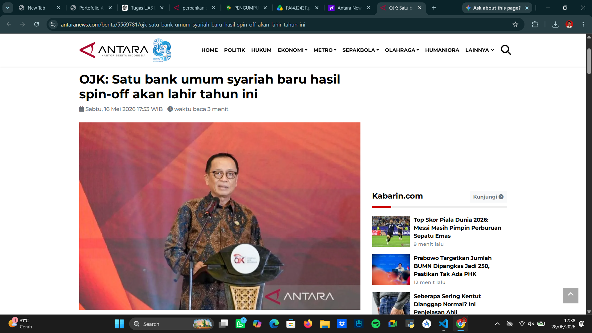
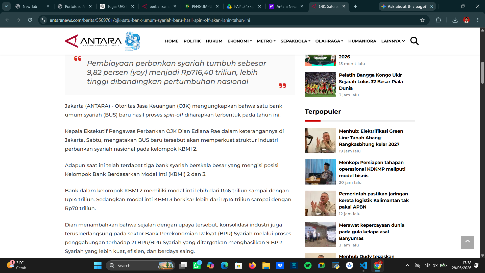

Perbankan Syariah dan Perbedaannya dengan Perbankan Konvensional
Perbankan merupakan salah satu lembaga keuangan yang memiliki peran penting dalam perekonomian suatu negara. Di Indonesia terdapat dua sistem perbankan yang berkembang, yaitu perbankan syariah dan perbankan konvensional. Keduanya memiliki fungsi yang sama dalam menghimpun dan menyalurkan dana masyarakat, namun memiliki perbedaan mendasar dalam prinsip operasionalnya.
Pengertian Perbankan Syariah
Perbankan syariah adalah lembaga keuangan yang menjalankan kegiatan usaha berdasarkan prinsip-prinsip syariah Islam. Sistem yang digunakan tidak menerapkan bunga (riba), melainkan menggunakan konsep bagi hasil, jual beli, sewa, dan kerja sama yang sesuai dengan ketentuan syariat.
Pengertian Perbankan Konvensional
Perbankan konvensional merupakan lembaga keuangan yang menjalankan kegiatan usahanya menggunakan sistem bunga sebagai sumber keuntungan utama. Hubungan antara bank dan nasabah umumnya berupa hubungan kreditur dan debitur.
Perbedaan Perbankan Syariah dan Perbankan Konvensional
| Aspek | Perbankan Syariah | Perbankan Konvensional |
|---|---|---|
| Dasar Operasional | Prinsip Syariah Islam | Sistem Bunga |
| Keuntungan | Bagi Hasil | Bunga |
| Hubungan dengan Nasabah | Kemitraan | Kreditur dan Debitur |
| Pengawasan | OJK dan Dewan Pengawas Syariah | OJK |
| Larangan | Riba, Gharar, dan Maisir | Tidak ada ketentuan khusus syariah |
Studi Kasus Perkembangan Perbankan Syariah di Indonesia


Berdasarkan berita ANTARA News yang diterbitkan pada 16 Mei 2026, Otoritas Jasa Keuangan (OJK) menyampaikan bahwa satu Bank Umum Syariah (BUS) baru hasil proses spin-off diperkirakan akan terbentuk pada tahun 2026. Selain itu, pembiayaan perbankan syariah tumbuh sebesar 9,82 persen (year on year) menjadi Rp716,40 triliun, lebih tinggi dibandingkan pertumbuhan nasional.
Data tersebut menunjukkan bahwa industri perbankan syariah di Indonesia mengalami perkembangan yang cukup pesat dan semakin dipercaya oleh masyarakat. Pertumbuhan tersebut juga mencerminkan meningkatnya minat masyarakat terhadap layanan keuangan berbasis syariah.
Opini Saya
Menurut saya, perkembangan perbankan syariah di Indonesia merupakan hal yang sangat positif karena memberikan pilihan layanan keuangan yang lebih beragam bagi masyarakat. Sistem bagi hasil yang diterapkan dapat menjadi alternatif bagi masyarakat yang ingin menghindari transaksi berbasis bunga.
Selain itu, perbankan syariah tidak hanya dapat dimanfaatkan oleh umat Islam, tetapi juga oleh masyarakat non-Muslim yang menginginkan sistem keuangan yang lebih transparan, adil, dan berbasis kemitraan. Dengan pengawasan yang baik dari OJK serta peningkatan kualitas layanan, saya berharap perbankan syariah dapat terus berkembang dan memberikan kontribusi yang lebih besar terhadap pertumbuhan ekonomi Indonesia.
Kesimpulan
Perbankan syariah dan perbankan konvensional memiliki tujuan yang sama dalam mendukung aktivitas ekonomi masyarakat. Namun, keduanya memiliki perbedaan mendasar pada sistem operasional yang digunakan. Perbankan syariah menerapkan prinsip syariah dan sistem bagi hasil, sedangkan perbankan konvensional menggunakan sistem bunga. Dengan perkembangan yang terus meningkat, perbankan syariah memiliki peluang besar untuk menjadi salah satu pilar penting dalam sistem keuangan nasional.
Referensi
- Antara News. (2026). OJK: Satu Bank Umum Syariah Baru Hasil Spin-off Akan Lahir Tahun Ini
- Detik Finance. (2026). Total Aset Perbankan Syariah RI Tembus Rp1.061 Triliun
- Media Indonesia. (2026). OJK: Aset Perbankan Syariah Tumbuh Dua Digit Tembus Rp1.061 Triliun
- Kontan. (2026). Kinerja Bank Syariah Kuartal I-2026 Moncer, Laba dan Pembiayaan Tumbuh Double Digit
- Antara News. (2026). BSI Raih Peringkat 1 Rating ESG Global Islamic Banking
Praktik Muamalah
Berikut merupakan tautan praktik muamalah yang telah dibuat:
Klik di sini untuk melihat Video Praktik Muamalah